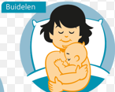
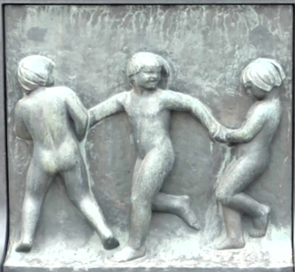
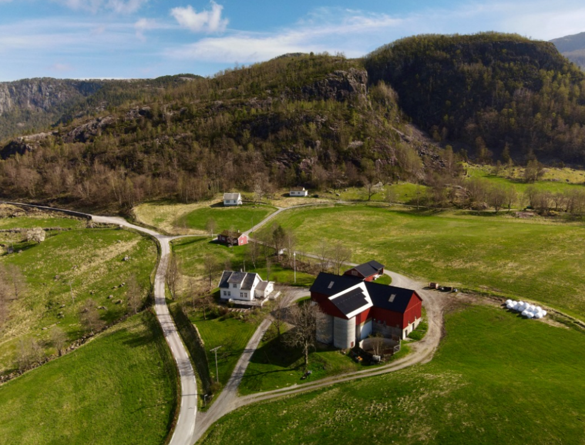
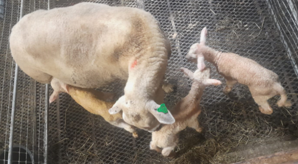
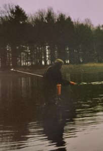

Deze website is in elkaar geknutseld voor Juul en haar 3 mukjes
 |
|
|
23 maart: Tsja Juul, zo'n lief klein babietje, maar dan 3 keer. En nog erger: 2 mannelijke Juultjes, ga er maar eens aan staan.

29 maart: Zo ziet AI in Disney stijl jouw toekomst:

27 april: Ze zijn er al! Geweldig! Maar, lang, lang geleden hebben wij ook gebuideld. De echte foto moet je hier ff zelf overheen plakken...

27 april: Begin 20ste eeuw wist Gustav al hoe jullie toekomst eruit zou zien, dat is toch ongelooflijk?

28 april: Hier wil je altijd zo graag zijn, ben je ook zo benieuwd hoe Sem, Mirthe en Lasse het hier gaan vinden?

28 april: En daar op Fossane Gard is ook een drieling geboren, eergisteren 26 april. Hoe ze heten? Sem, Mirthe en Lasse natuurlijk. Alleen is Sem hier een meisje.

28 april: Feestelijke dag vandaag, je vader is vandaag precies 38 jaar aquatisch oecoloog, onvoorstelbaar, toch?
Als je hier genoeg van hebt en toe bent aan een volgende stap, stuur een berichtje naar me op What'sApp (Gi bestefar litt tid og hvile til å komme med neste kreative utbrudd ;-) 2Bcontinued...)